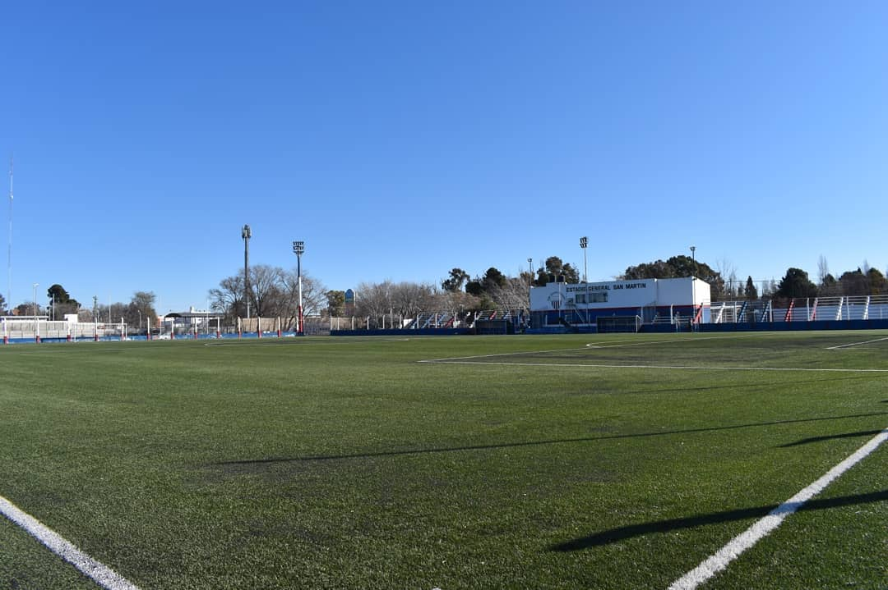
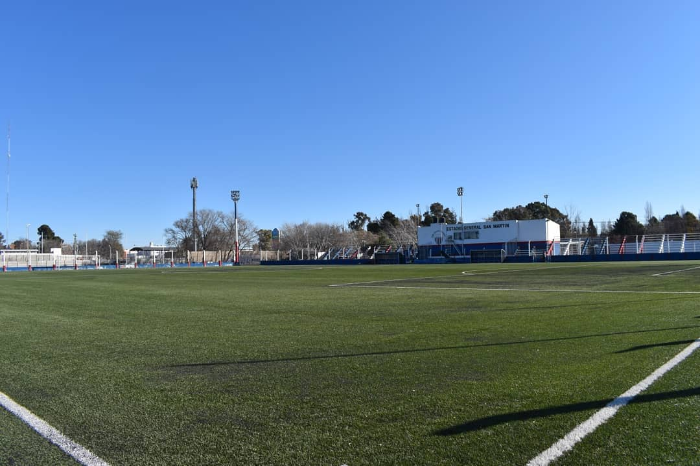

El 12 de septiembre de 1985, dos clubes deportivos, Deportivo Neuquén y Unión Deportivo Limay, unieron fuerzas para dar vida al Club Atlético Neuquén, una institución que desde sus primeros pasos demostró un enorme potencial y un espíritu deportivo ejemplar. Esta fusión marcó el inicio de una historia llena de compromiso y crecimiento, convirtiéndose rápidamente en un pilar de la comunidad, donde la pasión por el deporte se combinó con una visión de futuro y un fuerte sentido de identidad.
En los últimos años, el club emprendió un ambicioso proceso de innovación y modernización que ha transformado por completo sus instalaciones. Este esfuerzo ha elevado significativamente la calidad de la experiencia para jugadores, técnicos y simpatizantes, mostrando un compromiso constante con la excelencia. Entre las mejoras más destacadas se encuentra la instalación de césped sintético en sus campos principales, una renovación que optimiza tanto el entrenamiento como la práctica deportiva. Además, se llevaron a cabo remodelaciones en los espacios tradicionales, mientras que nuevas comodidades fueron añadidas: un albergue para jugadores que facilita la estadía, una secretaría administrativa moderna, un despacho profesional para los profesores, un quincho ideal para reuniones sociales, y una tienda oficial del club que fortalece su identidad y relación con los aficionados.
A nivel deportivo, los avances han sido igualmente impresionantes. Se realizó la renovación completa del vestuario local, asegurando comodidad y funcionalidad para los jugadores. También se construyó un gimnasio moderno, equipado para cubrir las necesidades físicas de los equipos. En línea con su compromiso con la inclusión, el club está construyendo un vestuario dedicado al equipo femenino, demostrando su apoyo al crecimiento del fútbol femenino. Además, se añadieron dos canchas auxiliares de césped sintético, que permiten ampliar las posibilidades de entrenamiento y competencias, mientras que la iluminación mejorada asegura un óptimo desarrollo de actividades durante las horas nocturnas.
Todas estas transformaciones han convertido al Club Atlético Neuquén en un verdadero referente deportivo en la región. Su crecimiento sostenido no solo ha atraído a más jugadores y simpatizantes, sino que también ha fortalecido su conexión con la comunidad. Este notable progreso no sería posible sin la visión estratégica y el esfuerzo incansable de Juan Gutiérrez y su equipo, quienes han liderado con dedicación este proceso de evolución, marcando un antes y un después en la historia de la institución.
Hoy, el Club Atlético Neuquén es mucho más que un club deportivo; es un símbolo de orgullo y pertenencia para la comunidad, un ejemplo de lo que se puede lograr con trabajo, pasión y compromiso. Su lema, “Cumple sus sueños quien resiste, con trabajo y humildad”, encapsula perfectamente los valores que guían cada acción del club, consolidándolo como una inspiración para todos aquellos que sueñan con construir un futuro mejor.

 



Cornelio Saavedra 250, Q8300 Neuquén
Tel: 0299 443-8800
Email: consultas@clubatleticoneuquen.com.ar